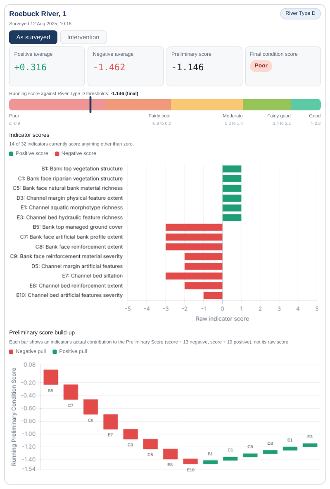
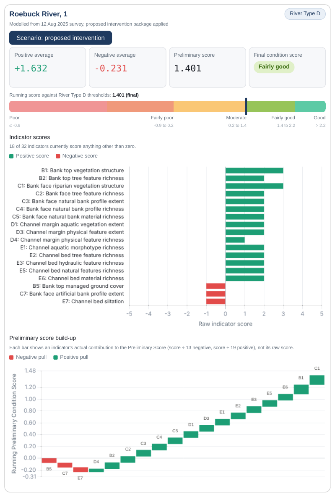
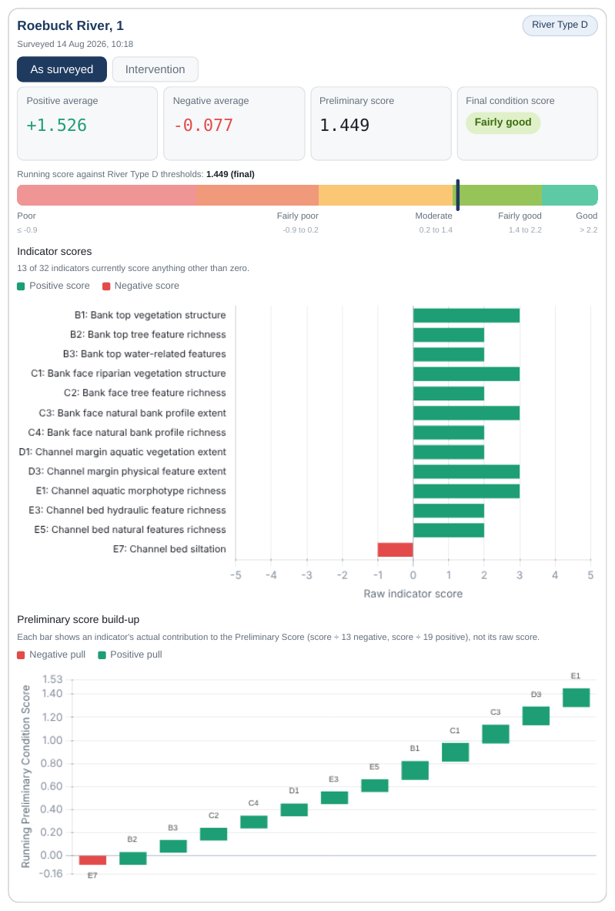

River Condition Assessments and reporting
Roebuck Environmental is a sole trader providing MoRPh5 River Condition Assessments throughout England. A Qualified Surveyor will collect data, complete the desk study and issue an RCA report. There is no consultancy layer, so costs are kept low.
View example reports
Every assessment is issued as survey data with PDF reports for each subreach, showing the River Type, the preliminary condition score against its thresholds, each indicator score and how each indicator builds the result. The examples below use an illustrative reach surveyed before and after works.
- Survey data
- Pre-intervention PDF report
- Post-intervention PDF report
- Intervention scenario PDF report



What a River Condition Assessment is
A River Condition Assessment records the physical condition of a river reach using a standardised, repeatable field method. Each reach is surveyed against a set of 32 indicators covering channel form, bank and bed character, flow features and the surrounding riparian zone. The results are scored against the expected condition for that River Type.
The resulting condition scores are used as an input to the Statutory Biodiversity Metric for rivers and streams, and to set a baseline and monitor change on restoration projects.
What is provided
On-site data collection
MoRPh5 survey of each reach on site, carried out all year round where conditions are safe. Travelling throughout England.
Desk study
River Type inputs and reach set-up completed from desk-based data and the site survey.
Condition scoring
Indicator scores and condition class calculated and checked for each subreach.
Pre-intervention report
PDF report of current condition for each subreach, issued with the survey data.
Post-intervention report
A repeat survey and PDF report to show the condition recorded after works are complete.
Intervention scenario report
PDF report of the modelled condition score for a proposed set of indicator changes.
Roebuck Environmental supplies survey data and reports only. Consultancy and advice are not offered.
How an assessment is delivered
Quote
You send the site location, river length and intended use. A fixed quote is returned.
Site survey
The surveyor attends site and collects the MoRPh5 data for each reach.
Desk study
The surveyor completes the desk study, scoring and checks from the office.
Delivery
The survey data and PDF reports are issued to you.
Suited to a range of clients
- Ecological and engineering consultancies needing a subcontract surveyor
- Ecologists needing river condition data for Biodiversity Net Gain
- Developers with a watercourse on or near a site
- Landowners and estates planning river or habitat works
- Rivers trusts and catchment partnerships
- Restoration projects requiring baseline and monitoring data
Surveying throughout England
Roebuck Environmental carries out surveys throughout England. Towns, cities and landscapes across the areas covered include:
Bath and North Somerset
Bath, Keynsham, Radstock, Midsomer Norton, Clevedon, Portishead, Weston-super-Mare
Somerset
Wells, Glastonbury, Frome, Shepton Mallet, Bridgwater, Taunton, Yeovil, Minehead, Cheddar, Mendip Hills, Quantock Hills, Somerset Levels
Gloucestershire
Gloucester, Cheltenham, Stroud, Cirencester, Tewkesbury, Tetbury, Forest of Dean, Cotswolds
Wiltshire
Swindon, Chippenham, Trowbridge, Salisbury, Devizes, Marlborough, Malmesbury, Warminster
Dorset
Dorchester, Sherborne, Shaftesbury, Bridport, Lyme Regis, Poole, Bournemouth
Devon and Cornwall
Exeter, Plymouth, Truro, Tiverton, Honiton, Dartmoor, Exmoor, Blackdown Hills
Herefordshire and Worcestershire
Hereford, Ross-on-Wye, Worcester, Wye Valley
Oxfordshire and Berkshire
Oxford, Witney, Wantage, Newbury, Reading, Hungerford
Hampshire
Winchester, Andover, Southampton, Portsmouth, New Forest
London and the South East
London, Brighton, Canterbury, Guildford, Maidstone, Kent, Surrey, Sussex
East of England
Cambridge, Norwich, Ipswich, Colchester, Peterborough, The Broads
Midlands
Birmingham, Coventry, Leicester, Nottingham, Derby, Stoke-on-Trent, Peak District
Common questions
What is a River Condition Assessment?
A standardised field survey and scoring of the physical condition of a river reach, completed using the MoRPh5 method and scored against the expected condition for its River Type.
When is one needed?
Requirements depend on the project. The results are used as an input to the Statutory Biodiversity Metric for rivers and streams, and for baseline and monitoring data on restoration schemes. Your ecologist or the local planning authority can confirm whether one is required.
What do I receive?
The survey data, a pre-intervention PDF report, a post-intervention PDF report after works, and an intervention scenario PDF report.
Do you provide advice or consultancy?
No. Roebuck Environmental supplies survey data and reports only. Interpretation and any Biodiversity Metric calculation are left to your own ecologist or consultant.
When can surveys be carried out?
All year round, where site conditions are safe.
Where do you work?
Roebuck Environmental carries out surveys throughout England. See the areas covered.
How do I get a price?
Send the site location, approximate river length and intended use through the contact details below for a fixed quote.
Adam Hughes, Qualified Surveyor
Roebuck Environmental is a sole trader practice operated by Adam Hughes, a Qualified Surveyor for River Condition Assessment through Modular River Survey. Adam works in river restoration and attends site, completes the desk study and issues the reports personally.
Surveys are carried out throughout England.
Request a quote
Tell me about the site and what the results are for. A fixed quote will follow.
Prefer to talk or email? 07473 896526 adam@roebuckenvironmental.co.uk